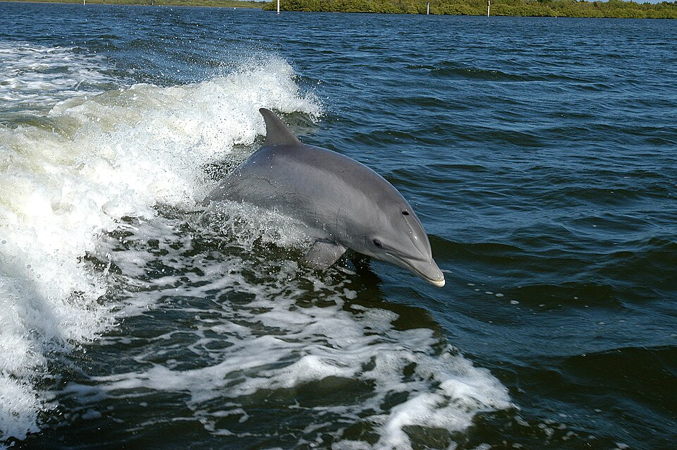

Overview

The bottlenose dolphin is a toothed whale in the genus Tursiops. They are common, cosmopolitan members of the family Delphinidae, the family of oceanic dolphins. Bottlenose dolphins inhabit warm and temperate seas worldwide, being found everywhere except for the Arctic and Antarctic Circle regions.
Their name derives from the Latin tursio (dolphin) and truncatus for the truncated teeth (the type specimen was old and had worn down teeth; this is not a typical characteristic of most members of the species).
Bottlenose dolphins gained popularity from aquarium shows and television programs such as Flipper.
Species
Molecular studies show the genus contains three species. The Society for Marine Mammalogy's Committee on Taxonomy presently recognizes these three, while the IUCN, on their Red List of endangered species, currently recognises only two species of bottlenose dolphins.
| Common name | Scientific name | Where it lives |
|---|---|---|
| Common bottlenose dolphin | Tursiops truncatus | Coastal and oceanic habitats of most tropical to temperate oceans |
| Indo-Pacific bottlenose dolphin | Tursiops aduncus | Coastal waters around India, northern Australia, South China, the Red Sea, and the eastern coast of Africa |
| Tamanend's bottlenose dolphin | Tursiops erebennus | Shallower coastal waters of the western North Atlantic |
Hybrids and fossil species
Bottlenose dolphins have been known to hybridize with other dolphin species. The best known hybrid is the wholphin, a false killer whale–bottlenose dolphin hybrid.
Bottlenose dolphins appeared during the Miocene.
The body
The bottlenose dolphin can reach a length of just over 4 m (13 ft). Its color varies considerably, is usually dark gray on the back and lighter gray on the flanks. This is called countershading and is a form of camouflage.
Anatomy
- Rostrum
- Their elongated upper and lower jaws form what is called a rostrum, or snout, which gives the animal its common name.
- Blowhole
- The real, functional nose is the blowhole on top of its head.
- Teeth
- Bottlenose dolphins have 18 to 28 conical teeth on each side of each jaw.
- Flukes and dorsal fin
- The flukes (lobes of the tail) and dorsal fin are formed of dense connective tissue and do not contain bone or muscle. The animal propels itself by moving the flukes up and down.
- Pectoral flippers
- The pectoral flippers (at the sides of the body) are for steering; they contain bones homologous to the forelimbs of land mammals.
By the numbers
| Measure | Typical | Range or limit |
|---|---|---|
| Weight | Average of 300 kg (660 lb) | 150 to 650 kg (330 to 1,430 lb) |
| Swimming speed | 5 to 11 km/h | Bursts of up to 29 to 35 km/h, sustained only for a short time |
| Lifespan | More than 40 years | Some females exceed 60 years, though less than 2% of all bottlenose dolphins live that long |
| Breathing | Two to three times per minute | Can remain submerged for up to 20 minutes |
Bottlenose dolphins can jump to a height of 6 metres (20 feet) in the air. Dolphins can breathe while half-asleep
: during the sleeping cycle, one brain hemisphere remains active, while the other hemisphere shuts down.
Senses
Echolocation
The dolphin's search for food is aided by a form of sonar known as echolocation: it locates objects by producing sounds and listening for the echoes. Echolocation tells the dolphins the shape, size, speed, distance, and location of the object. Bottlenose dolphins are also able to extract shape information, suggesting they are able to form an echoic image
or sound picture of their targets.
Eyesight and smell
Dolphins have sharp eyesight. Their horseshoe-shaped, double-slit pupils enable dolphins to have good vision both in air and underwater. By contrast, a bottlenose's sense of smell is poor, because its blowhole, the analog to the nose, is closed when underwater and it opens only for breathing.
Communication
Bottlenose dolphins communicate through burst pulsed sounds, whistles, and body language. Examples of body language include leaping out of the water, snapping jaws, slapping the tail on the surface and butting heads. Each animal has a uniquely identifying, frequency-modulated narrow-band signature vocalization (signature whistle).
Intelligence
Cognitive abilities that have been investigated include concept formation, sensory skills, and mental representations. Such research has been ongoing since the 1970s.
Tool use and culture
At least some wild bottlenose dolphins use tools. In Shark Bay, off Western Australia, dolphins place a marine sponge on their rostrum, presumably to protect it when searching for food on the sandy sea bottom. A study showed mothers most likely teach the behavior to their offspring, evincing culture (behavior learned from other species members).
People and conservation
The species sometimes shows curiosity towards humans in or near water.
Four lifeguards, swimming 100 m (330 ft) off the coast near Whangārei, were approached by a shark (reportedly a great white shark). Bottlenose dolphins herded the swimmers together and surrounded them for 40 minutes, preventing the shark from attacking, as they slowly swam to shore.
Threats
- Between and , about four million dolphins have drowned in fishing nets.
- Heavy metals including mercury, PCBs and DDT are of great concern. These pollutants can cause harm in dolphins growth development, reproduction, and immunity.
- In coastal regions, dolphins run the risk of colliding with boats.
Conservation status
Bottlenose dolphins are not endangered. Their future is stable because of their abundance and adaptability. However, specific populations are threatened due to various environmental changes. In United States waters, hunting and harassing of marine mammals is forbidden in almost all circumstances, from passage of the Marine Mammal Protection Act of .
Report a sighting
Seen a bottlenose dolphin? Tell us where and what it was doing. This form is a class demonstration, so nothing you enter is sent anywhere.